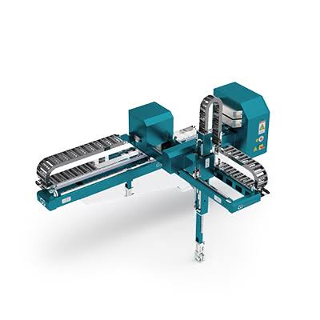

Deslocamentos lineares em três eixos, com trajetória simples de interpretar e programar.
ROBÓTICA INDUSTRIAL / CARTESIANO
ROBÔ CARTESIANO
Movimentos lineares nos eixos X, Y e Z.

CARTESIANOCATÁLOGO TÉCNICO05 / PERFIL DO ROBÔ
LINEAR, PRECISO, PREVISÍVEL.
O cartesiano é uma escolha natural quando o processo precisa de movimentos lineares bem definidos e uma área de trabalho fácil de organizar.
Excelente para operações repetitivas em que posição e organização do processo são prioridades.
Pick and place, movimentação de peças, processos CNC e automações em estruturas modulares.
01 / CONCEITO
COMO FUNCIONA
O robô cartesiano utiliza coordenadas cartesianas para realizar deslocamentos lineares e controlados. É comum em aplicações que exigem repetibilidade e uma área de trabalho organizada em eixos.
CARACTERÍSTICAS
- X, Y e Z
- Movimentos lineares
- Boa repetibilidade
- Configuração modular
- Capacidade de carga conforme o modelo
02 / APLICAÇÕES
ONDE É UTILIZADO
Pick and PlacePaletizaçãoMáquinas CNCMovimentação de peçasImpressão e processos automatizados
03 / INDÚSTRIA 4.0
INTEGRAÇÃO COM IoT
Em um projeto conectado, sensores podem acompanhar posição, ciclos, temperatura e vibração. Os dados podem alimentar manutenção preditiva e supervisão do processo.
SENSORES→CONTROLADOR→ROBÔ→DADOS
04 / MERCADO
FABRICANTES E MODELOS
IAIIX Series
FANUCCartesian / gantry solutions
Yamaha RoboticsXY-X Series
Os exemplos representam fabricantes conhecidos do setor; modelos e especificações variam conforme aplicação.
01
Cartesiano
O desempenho depende de fatores como carga, alcance, precisão, velocidade, ferramenta e configuração da célula.
02
Aplicação
A escolha do tipo de robô deve considerar a tarefa, o espaço disponível, os requisitos de segurança e o processo produtivo.
03
Conectividade
Sensores, controladores e redes permitem acompanhar o processo e transformar dados operacionais em informações úteis.